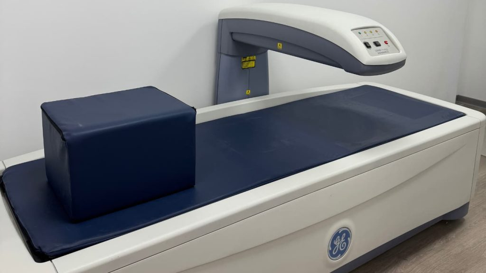

Radiologia
Densitometria ossea, radiografie e mammografia 3D: la diagnostica per immagini dello studio.

Diagnostica per immagini
L’elenco definitivo sarà pubblicato prima dell’apertura.

Densitometria ossea (MOC)
Total body, lombare, femorale, lombare e femorale, ultradistale.
Radiografie
Torace, colonna, bacino e anca, spalla, ginocchio, gomito, mano e piede, cranio.

Mammografia 3D
Bilaterale in tomosintesi, anche con ecografia e visita senologica.
ScopriElenco preso da Praemedica, da confermare per Avenir
La MOC, per ossa forti dopo la menopausa
La densitometria ossea misura quanto sono dense le ossa, con una dose di raggi X molto bassa. È l’esame di riferimento per scoprire e seguire l’osteoporosi.
Come prepararti
Radiografie e MOC non richiedono digiuno. Ecco cosa tenere a mente.
✓Da fare
- Avvisa sempre se sei o potresti essere in gravidanza
- Indossa abiti comodi, senza bottoni o parti metalliche
- Porta radiografie e MOC precedenti per il confronto
✕Da evitare
- Integratori di calcio nelle 24 ore prima della MOC
- Esami con mezzo di contrasto nei giorni prima della MOC
- Gioielli, piercing e oggetti metallici nella zona da esaminare
Ogni quanto si ripete la MOC?
Di solito ogni 18–24 mesi, ma lo decide il medico in base al primo risultato.
Le radiografie sono pericolose?
Le dosi sono basse e controllate. Avvisa sempre se sei in gravidanza.
Serve l’impegnativa?
Risposta da definire con lo studio


Prenota il tuo esame
Chiama la segreteria: ti diciamo come prepararti e la prima data libera.